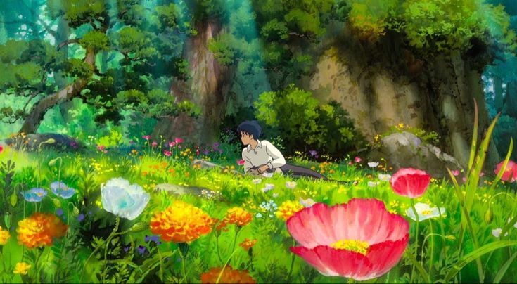
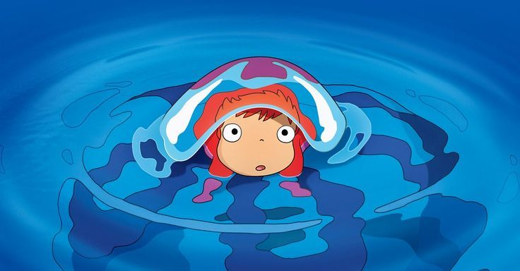
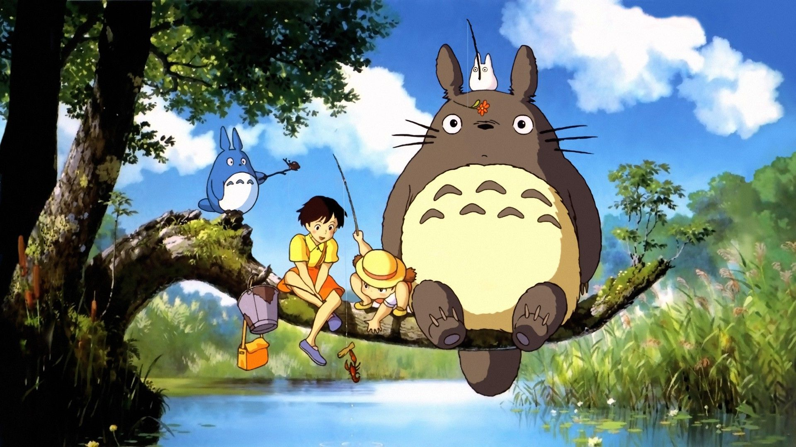
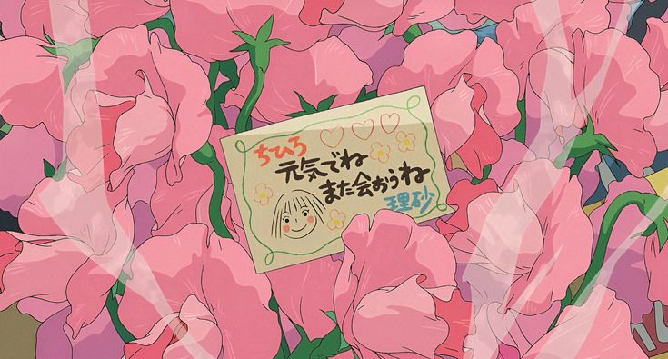
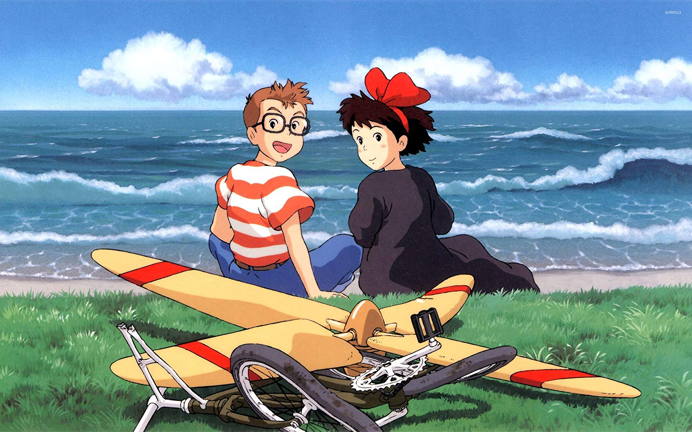
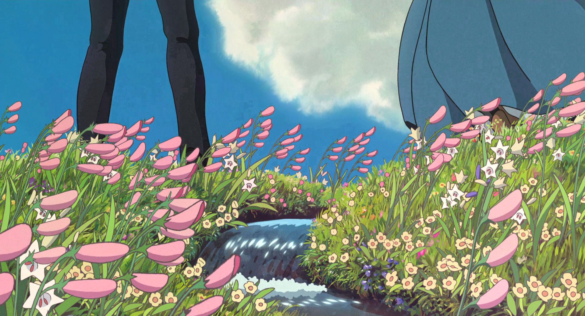
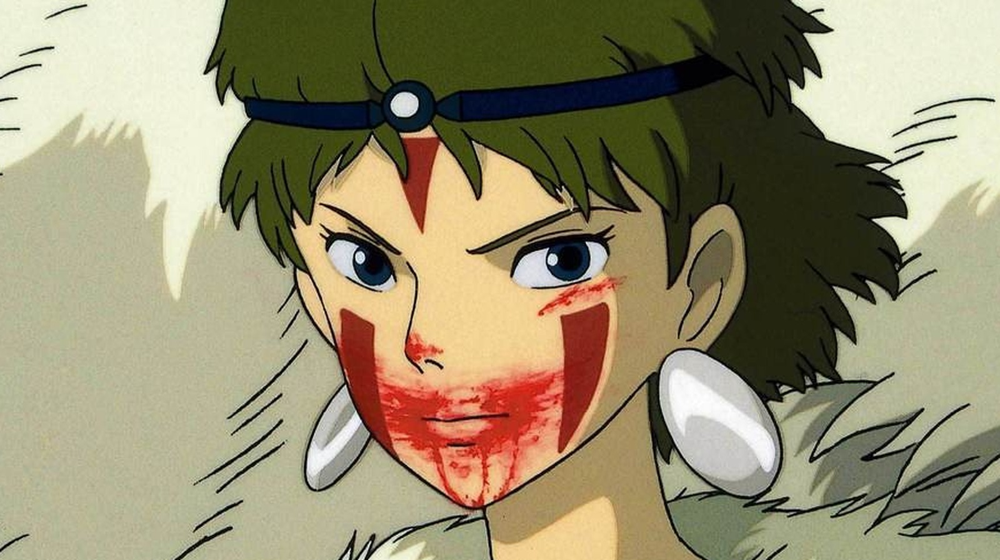

Studioghibli movie: Arrietty
Arrietty, titled Arrietty the Borrower (Japanese: 借りぐらしのアリエッティ, Hepburn: Karigurashi no Arietti) in Japan and The Secret World of Arrietty in North America, is a 2010 Japanese animated fantasy film directed by Hiromasa Yonebayashi as his feature film debut as a director, animated by Studio Ghibli for the Nippon Television Network, Dentsu, Hakuhodo DY Media Partners, Walt Disney Japan, Mitsubishi, Toho and Wild Bunch.
read more

Studioghibli movie: Ponyo
Ponyo (Japanese: 崖の上のポニョ, Hepburn: Gake no Ue no Ponyo, lit. 'Ponyo on the Cliff')[a] is a 2008 Japanese animated fantasy film written and directed by Hayao Miyazaki. It was animated by Studio Ghibli for the Nippon Television Network, Dentsu, Hakuhodo DY Media Partners, Buena Vista Home Entertainment, Mitsubishi, and distributed by Toho.
read more

Studioghibli movie: My neighbour totoro
My Neighbor Totoro (Japanese: となりのトトロ, Hepburn: Tonari no Totoro) is a 1988 Japanese animated fantasy film written and directed by Hayao Miyazaki and animated by Studio Ghibli for Tokuma Shoten. It stars the voices of Noriko Hidaka, Chika Sakamoto and Hitoshi Takagi, and focuses on two young sisters and their interactions with friendly wood spirits in postwar rural Japan.
read more

Studioghibli movie: Spirited away
Spirited Away (Japanese: 千と千尋の神隠し, Hepburn: Sen to Chihiro no Kamikakushi, lit. 'Sen and Chihiro's Spiriting Away') is a 2001 Japanese animated fantasy film written and directed by Hayao Miyazaki. Spirited Away tells the story of Chihiro "Sen" Ogino, a ten-year-old girl who, while moving to a new neighborhood, inadvertently enters the world of kami.
read more

Studioghibli movie: Kiki's delivery service
Kiki's Delivery Service (Japanese: 魔女の宅急便, Hepburn: Majo no Takkyūbin, lit. 'Witch's Express Home Delivery') is a 1989 Japanese animated fantasy film written, produced, and directed by Hayao Miyazaki, based on the 1985 novel of the same name by Eiko Kadono. It was animated by Studio Ghibli for Tokuma Shoten. The story follows Kiki, a young witch who moves to the port city of Koriko with her cat Jiji and starts a flying courier service.
read more

Studioghibli movie: Howl's moving castle
Howl's Moving Castle (Japanese: ハウルの動く城, Hepburn: Hauru no Ugoku Shiro) is a 2004 Japanese animated fantasy film written and directed by Hayao Miyazaki. The film is set in a fictional kingdom where both magic and early twentieth-century technology are prevalent, against the backdrop of a war with another kingdom. It tells the story of Sophie, a young milliner who is turned into an elderly woman by a witch who enters her shop and curses her. She encounters a wizard named Howl and gets caught up in his resistance to fighting for the king.
read more

Studioghibli movie: Princess Mononoke
Princess Mononoke (Japanese: もののけ姫, Hepburn: Mononoke-hime) is a 1997 Japanese animated historical fantasy film written and directed by Hayao Miyazaki. Set in the Muromachi period of Japanese history, the film follows Ashitaka, the last Emishi prince, as he journeys west to cure his cursed arm and becomes embroiled in the conflict between Irontown and the forest of the gods, as well as the feud between Lady Eboshi and a human girl raised by wolves, San.
read more
Studioghibli movie: The Boy and the Heron
The Boy and the Heron (Japanese: 君たちはどう生きるか, Hepburn: Kimitachi wa Dō Ikiru ka, lit. 'How Do You[a] Live?') is a 2023 Japanese animated fantasy film written and directed by Hayao Miyazaki. Produced by Studio Ghibli. Described as a "big, fantastical film",[2] it follows a boy named Mahito Maki who moves to the countryside after his mother's death, discovers an abandoned tower near his new home, and enters a fantastical world with a talking grey heron.
read more